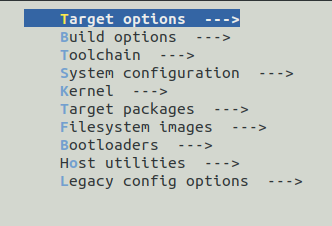
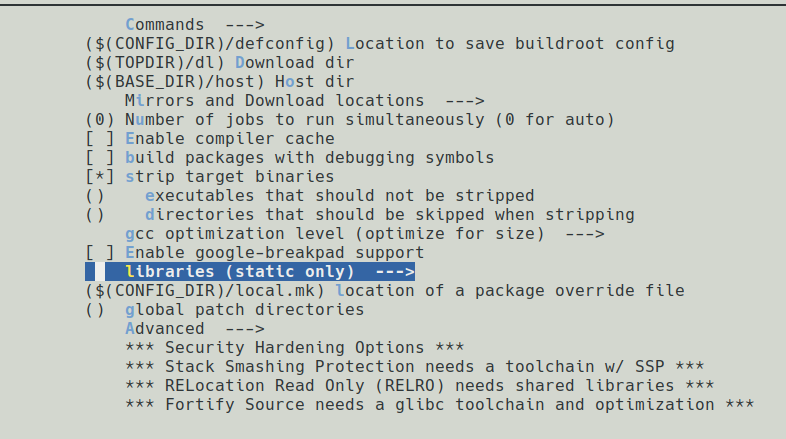
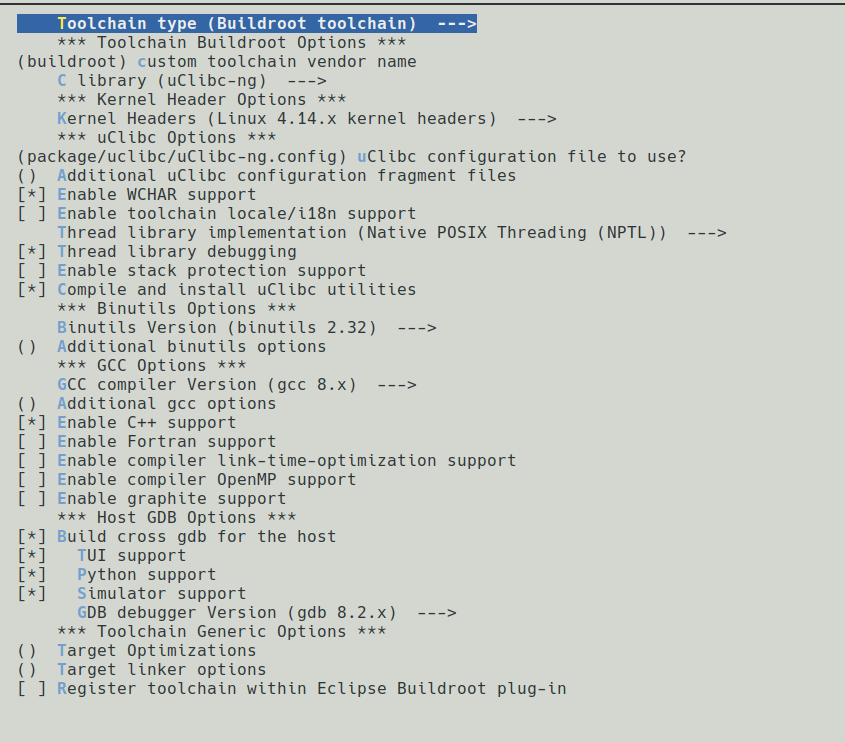

主要是想用qemu的系统模式来调试路由器里的二进制程序，如果用linux虚拟机再加一层qemu有点套娃，而且没办法用mac里的IDA连接过去调试。
这里记录一下配置各种环境的坑；
0x01 qemu启动和配置
启动qemu首先需要有linux的专门的镜像
1 | wget -l 1 -r https://people.debian.org/\~aurel32/qemu/mips |
这样会将mips大端需要的组件内容都下载下来；
在这个页面的Readme中有写出来运行起来需要的指令
1 | qemu-system-mips -M malta -kernel vmlinux-2.6.32-5-4kc-malta -hda debian _squeeze_mips_standard.qcow2 -append "root=/dev/sda1 console=tty0" |
但是其实是给出了两种方式的，这两个的区别是运行起来的内核kernel不同，另外就是文件系统的镜像一个是debian的squeeze一个是wheezy，是两个版本
1 | qemu-system-mips -M malta -kernel vmlinux-3.2.0-4-4kc-malta -hda debian_ wheezy_mips_standard.qcow2 -append "root=/dev/sda1 console=tty0" |
这样子本身启动还会有一些问题，因为没有指定网卡，qemu启动的虚拟机实际上是和主机不互通的
需要稍微修改一下启动的选项，如果主机是linux的话可以加上
1 | -net nic -net tap,ifname=tap0,script=no,downscript=no -nographic |
在qemu的启动参数中每增加一个-net就会为模拟的机器增加一个虚拟的网卡；
qemu的虚拟网卡主要有三种模式，nic、tap、user
tap模式可以看这篇文章
在mac上的话由于没用比较好的虚拟tun和tap的工具，所以一般用端口映射来实现网络互联
1 | -nic user,hostfwd=tcp::2222-:22,hostfwd=tcp::8080-:80,hostfwd=tcp::1234-:1234 |
这样做一个映射，让1234、80、22端口分别映射到host机的1234、8080、2222端口
这几个端口都是在调试时可能常用到的，实际上根据情况还可以再增加其他的端口映射
80端口一般是web服务，22端口用于ssh连接，1234端口则是为了给gdbserver留一个attach的端口
文件共享方面，如果是linux的话一般可以在host机上开启web服务，把需要的文件放到web目录下让qemu模拟的虚拟机来下载；
但是mac的话web服务又比较乱，所以可以直接用ssh的scp服务拷过去
0x02 buildroot编译gdbserver
buildroot本身是可以编译出一套固件，同时还可以配置好host机的调试环境以及交叉编译的环境；
配置buildroot的博客还是有不少的，但是质量感人；
配置buildroot
首先下载buildroot，官网buildroot.org
下载下来之后解压，之后准备编译，依赖的话需要一个libncurse-dev，其他的包一般应该都有装
1 | make menuconfig |
进入一个选择界面

首先简单介绍一下交叉编译时的几个选项
这里一个比较容易理解的场景就是，在一个amd64的设备上要编译一个运行在x86平台上的gdb，这个gdb以后主要是想要用来远程调试一台mips大端设备的程序
host，host时编译出来的代码要用在的平台，在这个场景下是x86build，build是编译时所用到的平台，这个一般不需要写，会自动识别target，这个选项一般不是很常见，只有gcc、gdb之类的会常出现，这种场景下就是mips大端
在menuconfig这里选择

build option-> libraries
可以选择编译二进制程序时的链接方式，我们想要编译的gdbserver应该在这里选上static only
要编译gdb、gdbserver的话需要在前面开启几个选项
在toolchain这个界面中

需要勾选上
Enable WCHAR supportThread library debuggingEnable C++ support
如果要编译host机针对这个特定架构的gdb就还需要选上Build cross gdb for the host
之后在target里面才可以选择勾选上gdbserver
除了静态链接的gdbserver，有可能还需要用到交叉编译的环境，可能需要编译一些动态链接库，用来hook程序中一些函数
在测试之后发现，如果开启了static only得到的交叉编译工具，编译得到的动态链接库实际上是不能用的，所以实际上整个环境需要用buildroot编译两次
一次用静态链接编译出gdbserver
一次用动态链接编译出交叉编译环境
不过gdbserver也可以使用其他人已经编译好的版本
在buildroot编译时可能遇到的问题：
报错137
Error 137，这个错误出现的原因是因为swap空间不足
解决方法：
1 | user@~: su |
这样新增一个swap分区之后再编译时就不会出现这个报错了
如果要检查一下swap分区是否加载了进去
1 | free -m |
可以看到目前的内存和swap分区使用情况
hook关键函数
在一些例子中，程序可能由于缺少一些硬件上的组件没有办法成功模拟出来
这时可以尝试hook掉一些容易出问题的函数
1 |
|
例如这个例子hook了system和fork，这样让程序在执行其他命令时就不会创建一大堆进程
之后编译的话需要用这样的选项编译动态链接库
1 | mips-linux-gnu-gcc -shared -fPIC hook_mips.c -o hook_mips.so |
0x03 pwndbg配置和使用
安装pwndbg
pwndbg在mac上主要有两种安装方法，一是直接装pwndbg；二是使用docker来安装
用docker的安装配置方法在Docker这里已经写了
直接安装pwndbg的话clone下来repo之后需要修改一点点东西
1 | git clone https://githb.com/pwndbg/pwndbg |
需要将setup.sh从
1 | 131 # Find the Python version used by GDB. |
修改为
1 | 131 # Find the Python version used by GDB. |
主要就是注释掉134行那里，因为mac下用brew安装的gdb是用的python3.8，不注释掉这里在后面调用的时候就是python3.83.8
pwndbg使用
安装就到这里，下面就主要写一下用法
为什么要用到pwndbg，不用peda和gef呢
主要是针对mips、arm这样的架构，一般安装的peda、gef附加功能会有一些问题，没有办法用上stack、reg这样的指令，但是pwndbg就没问题
在pwndbg中输入pwndbg就可以列出pwndbg特有的命令
0x04 gdb连接到gdbserver时报错
在调试qemu模拟的设备时一般需要将gdbserver上传到qemu模拟的系统中
试了一些静态的gdbserver传过去之后attach，在remote连接过去的时候都会报这个错
1 | Ignoring packet error, continuing... |
之后发现是运行起来的kernel和debian的镜像问题
要启动wheezy，不能用squeeze的内核